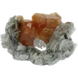

Mineral Grimoire

ScheeliteScheelite encourages being spiritually grounded and helps turn the head and mind around from negative patterns.
Appearance
Translucent crystalline stone in orangey-yellow to golden coloring
Origin
United States, China, Czech Republic, UK, Bohemia, Switzerland, Japan, New Zealand
Attributes
Scheelite encourages being spiritually grounded. It heightens intuition and opens the third eye, assisting in journeying. This incisive stone turns the head and the mind around. It is helpful for people stuck in patterns of mental negativity who constantly – by situations and by retelling the story – repeat their own and other people's negative experiences. They anchor the story back in by retelling it after a clearance as though they cannot bear the positive state. Scheelite 'closes the gap' so that the old pattern cannot reattach and assists a positive mental suggestion to be implanted so that the outlook changes and the past falls away. It harmonizes the mental body to the new positive vibration and encourages creative thinking.
Scheelite assists you in identifying appropriate goals for yourself that are in accordance with your soul purpose and with putting these into action.
Scheelite is particularly useful for healers and therapists who hold onto their client's experience. If a therapist doesn't let go it is as though it is still activated in the client, as the therapist carries it for the client. Scheelite helps both parties to let go. Keep a piece in the therapy room. Place Scheelite in a toilet cistern to flush the old patterns out after release. Scheelite removes past life mental patterning that has been carried over in the etheric blueprint. It clears the past life chakras of mental soul overlays and quietens mind chatter so that a new inner voice is heard. Overcoming self-sabotage, it helps the mind to function analytically rather than emotionally.
Lymph and other fluids act as a medium for carrying negative messages to the appropriate part of the body so that it reacts psychosomatically to an old stimulus. Scheelite releases the pattern so that the cells reprogram positively. It assists with EFT and other tapping or meridian-based therapies. It is a useful stone for aligning the subtle bodies with the physical and re-energizes all levels. The stone balances an excess of yang or masculine energy, especially in a female.
Scheelite brings out the good in someone's heart who has struggled to manifest their positive intentions. It acts as a spiritual support for those who are unsure of their future pathway. Scheelite harmonizes with Amphibole Quartz to call in angelic guidance.
Healing
Physically Scheelite would appear helpful in cases of heart failure where the body, especially the lungs and heart, becomes water logged and makes breathing difficult as it energetically stimulates fluid release. Scheelite assists the parathyroid and the fluid balance throughout the body (especially the lungs), reversing dehydration, and may treat inflammation of the bladder and urethra. It assists the lower back, nerves, muscles and blood vessels and restores energy when you are depleted.
Position
Place or grid as appropriate or disperse gem essence around the aura, particularly around the navel.
Chakra Work
Scheelite aligns the chakras by grounding through the Root Chakra and stimulating the Crown Chakra, enhancing spiritual awareness. It can be used as a pendulum to psychically scan the etheric body, identifying the energetic needs of each chakra so they can be balanced, activated, or soothed accordingly. It also brings emotional balance and can be gridded on or around a person to ease mood swings, whether due to hormonal imbalances or other underlying issues. For advanced practitioners, Scheelite helps align the higher self with the personality, bringing well-being and clarity to the mental and emotional bodies.
Spellworking
Scheelite encourages you to release limitations so you can more freely explore the outer reaches of your creativity. It opens the heart to forgiveness, both forgiving others and receiving forgiveness for yourself. For those working to manifest their dreams, Scheelite is a potent ally in the visualization process, the first step of manifestation: if you can see it in your mind's eye, you can bring it to fruition in your physical life. It helps you remain calm and detached during confrontation or sudden change, trusting that what unfolds is meant to be. Scheelite partners well with  Dolomite for grounding and emotional stability,
Dolomite for grounding and emotional stability,  Emerald for heart-centered wisdom,
Emerald for heart-centered wisdom,  Epidote for amplified manifestation,
Epidote for amplified manifestation,  Grossularite for abundance and growth,
Grossularite for abundance and growth,  Heliodor for solar willpower, and Yellow Apatite for clarity of intention.
Heliodor for solar willpower, and Yellow Apatite for clarity of intention.
Lore
Scheelite was named in 1821 after K. W. Scheele, the Swedish chemist who discovered tungsten, one of the metals on the periodic table. It is generally found in metamorphic rocks and hydrothermal veins formed at high temperatures. To locate this mineral in the field, prospectors search with an ultraviolet light source, as Scheelite fluoresces a vibrant blue color under UV. It occurs in a range of colors from transparent clear to blue through to deep orange, depending on other mineral inclusions. Gem-quality Scheelite is rare and quite fragile, though some specimens have been faceted; the largest faceted Scheelite currently known in the world is an orange stone weighing 55 carats. Perhaps most remarkably, Scheelite has been discovered on the moon.
Magickal Message
"Feel supported as you replace old patterns that no longer serve your highest good with new, positive thoughts and behaviors with me as your ally."